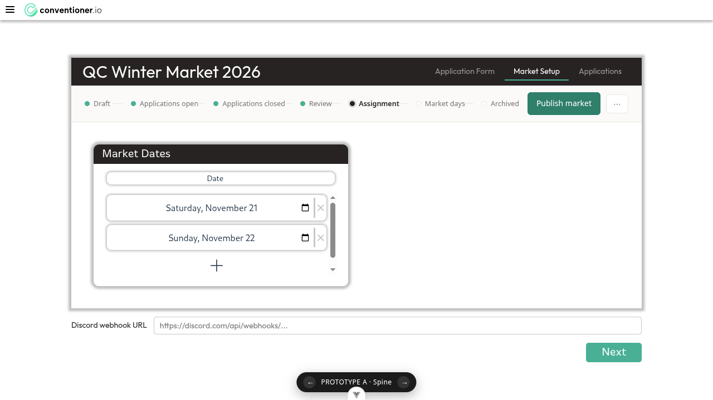
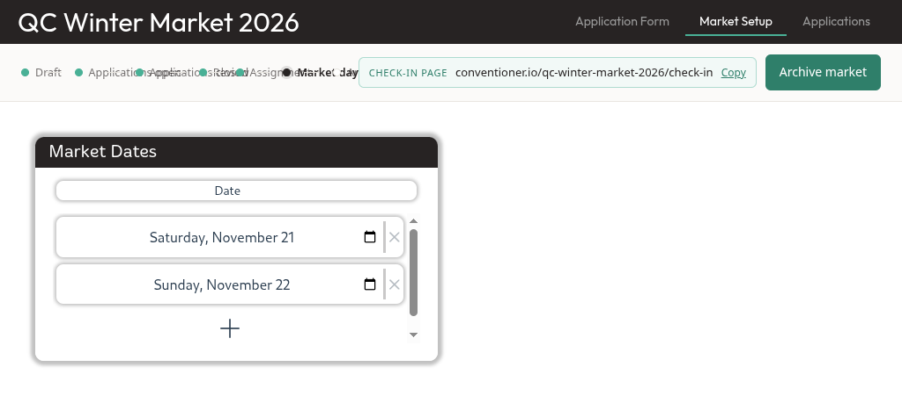
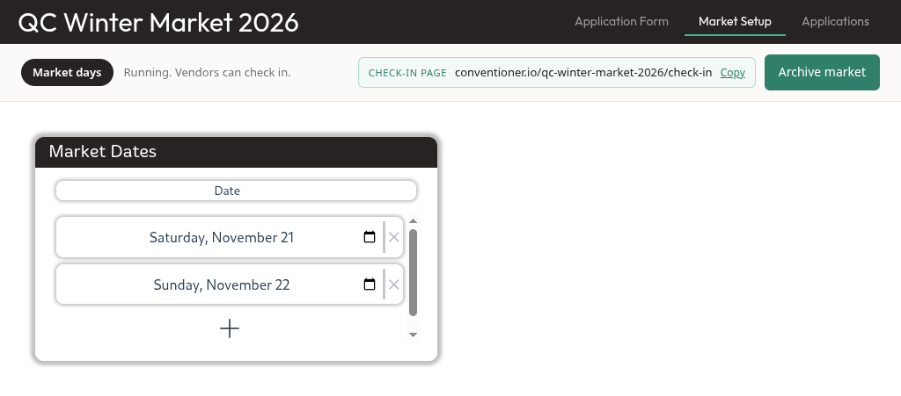
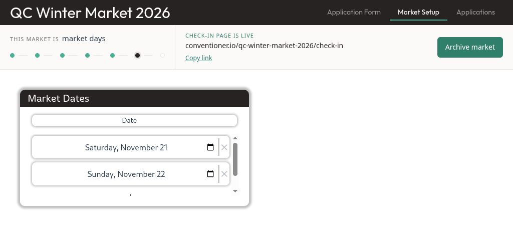
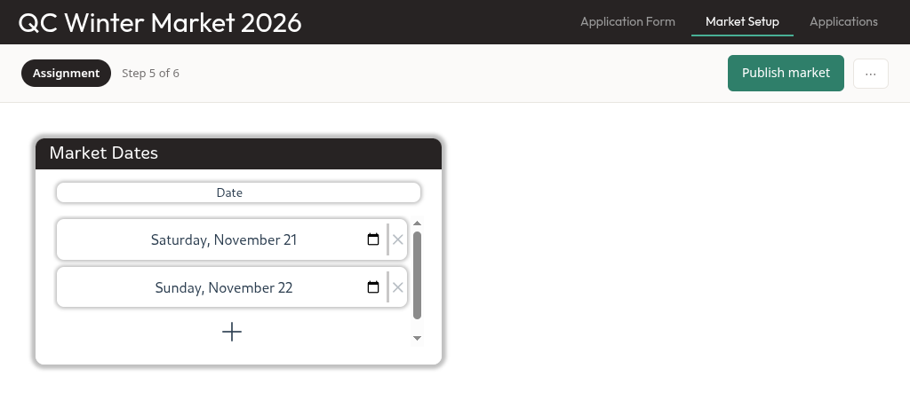
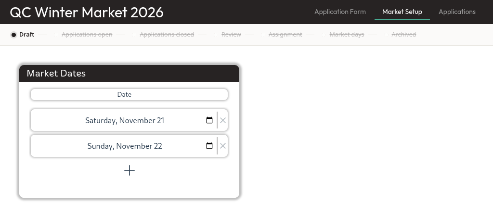
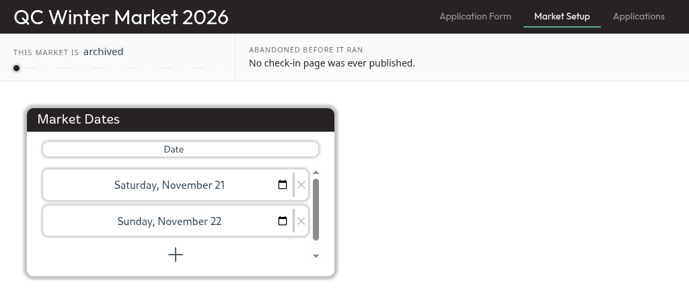

Three variants mounted on the real Market Setup route, at 1280x720, against the real header and the real market. Flip them yourself with ?variant=A|B|C; &phase= fakes any phase and &frozen=1 shows a market abandoned in draft. Both questions got an answer, and one of them is a no.
Variant A is comfortable at 1920x1080, and the earlier collision does not occur there. Measured with a deliberately long market name - portland-holiday-makers-market-december-2026, a 69-character URL, longer than anything in the repo's fixtures:
| Viewport | Rail | Smallest gap between labels | Result |
|---|---|---|---|
| 1920 x 1080 | 1536 | +31px | Clean spine at natural width, 24px clear of the actions |
| 1600 | 1280 | - | Clean |
| 1440 | 1152 | - | Clean |
| 1366 x 768 | 1093 | -59px | Five labels overlap |
| 1280 x 720 | 1024 | -67px | Five labels overlap |
The break is between 1366 and 1440. At and above 1440 the spine sits at its natural width and never competes with the URL; below it, the spine is the flexible element, absorbs the shortfall, and the labels paint over each other.
Still true from the first pass: A's frozen rail reads as stopped but not as archived. Strikethrough alone does not say the market is over. That is a words fix, cheap, and it is the one change A needs regardless of target width.
No new screenshots this pass: capture stopped completing against the running stack partway through, and the harness timeout is not adjustable. The numbers above are live getBoundingClientRect measurements taken at each width, which settle "does it fit" more exactly than an image would. The 1280 images below are from the first pass and still show what breaking looks like.
The seven-phase spine fits at 1280x720 - on its own. With the primary action and the overflow menu there is about 30px of slack. Ticket 01's fear was unfounded, as far as it went.
It does not survive the check-in URL. The moment the URL chip shares the row, the spine compresses below its content width and the labels collide into an unreadable smear. That is not a styling bug I should fix in the prototype - it is the answer. A labelled spine and the check-in URL cannot occupy one row at laptop width.
A frozen rail reads as stopped, but not as archived - unless words say so. Strikethrough alone communicates "these did not happen"; it does not communicate "this market is over". Both variants that state it in words read correctly.

assignment. Seven labels, the action, the menu. Fits, with slack.
market_days. The same spine, plus the URL. ApplicatioApplicatiRevieAssignmMarket day




| Option | Spine | Check-in URL | Costs |
|---|---|---|---|
| A as drawn | Labelled, 7 phases | Collides | Not viable at 1280 as one row |
| A, URL on a second row | Labelled, 7 phases | Own row when published | Rail height changes between phases |
| B | None - "Step 5 of 6" | Comfortable | Loses the at-a-glance lifecycle 01 wanted |
| C | Dots only | Best placed of the three | Two rows tall always; dots alone name nothing |
My reading: C, because it is the only one where the check-in URL is a stated fact rather than a chip in a toolbar - and that URL is the entire reason this ticket exists. Its dots-only spine is weaker than A's labels, but the words beside it carry the naming that A's labels were for, so little is actually lost. B is the safer, cheaper answer if the lifecycle-at-a-glance turns out not to matter once the rail is always present.
Throwaway prototype: front-end/src/components/PrototypePhaseRail.vue, mounted in MarketSetupView.vue behind ?variant=. It is in the working tree so you can flip through it; it goes to a throwaway branch and comes out of main once a variant wins. The real PhaseControlPanel still renders when no ?variant= is present, so nothing is broken meanwhile.